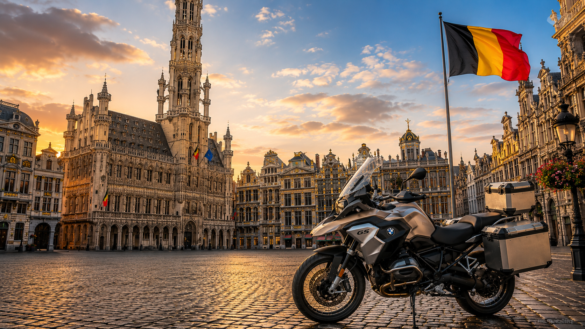

Ruime keuze in het Verenigd Koninkrijk
Bekijk op één platform motoren van Britse dealers en particuliere verkopers.
Of u nu een BMW, Honda, Yamaha, Kawasaki, KTM, Ducati, Triumph of Suzuki zoekt, AnyBike kan de juiste motor in het Verenigd Koninkrijk vinden en de overdracht aan uw transporteur voor België coördineren.

AnyBike brengt kopers in België in contact met motoren van dealers en particuliere verkopers in het hele Verenigd Koninkrijk, vanaf de eerste aanvraag tot de afgesproken overdracht aan de transporteur.
Bekijk op één platform motoren van Britse dealers en particuliere verkopers.
Geef merk, model, bouwjaar, kilometerstand, kleur, budget en gewenste uitvoering door.
AnyBike zoekt ook buiten de gepubliceerde voorraad naar geschikte motoren.
Vraag om foto’s, video’s, verkoperscontroles en waar beschikbaar onafhankelijke inspecties.
Beschikbare documenten en afgesproken voorbereiding in het Verenigd Koninkrijk worden vooraf bevestigd.
De motor kan worden overgedragen aan uw transporteur, opslaglocatie of logistieke partner.
Vertel AnyBike precies welke motor u zoekt. Wij onderzoeken de Britse markt en helpen u een geschikte motor te vinden voor transport naar België.
Ontdek bekende merken en bezoek de bijbehorende AnyBike-merkpagina’s zodra deze beschikbaar zijn.
AnyBike kan BMW GS, RT, R nineT, S 1000 RR en andere modellen zoeken bij Britse dealers en particulieren.
Bekijk BMW motoren →Vind Yamaha YZF-R1, MT, Ténéré, Tracer en andere modellen in het Verenigd Koninkrijk.
Bekijk Yamaha motoren →Zoek Honda Africa Twin, Fireblade, Gold Wing, CB en andere modellen op de Britse markt.
Bekijk Honda motoren →Ontdek Triumph Tiger, Street Triple, Speed Triple, Bonneville en andere Britse modellen.
Bekijk Triumph motoren →Bekijk Kawasaki Ninja, Z, Versys en andere motoren van Britse dealers en particulieren.
Bekijk Kawasaki motoren →AnyBike kan Suzuki Hayabusa, V-Strom, GSX-R en andere modellen in het Verenigd Koninkrijk zoeken.
Bekijk Suzuki motoren →Vind Ducati Multistrada, Panigale, Monster, Diavel en andere modellen.
Bekijk Ducati motoren →Zoek KTM Adventure, Super Duke, Enduro en andere performance-modellen.
Bekijk KTM motoren →Gebruik deze modelpagina’s als startpunt of stuur een zoekopdracht met gewenst bouwjaar, kilometerstand, kleur en uitvoering.
Zoek een Yamaha YZF-R1 in het Verenigd Koninkrijk op bouwjaar, kleur, kilometerstand en uitvoering.
Bekijk Yamaha YZF-R1 →Vind Yamaha MT-09 en MT-09 SP bij Britse dealers en particuliere verkopers.
Bekijk Yamaha MT-09 →Zoek Standard-, Rally- en andere Adventure-uitvoeringen van de Ténéré 700.
Bekijk Yamaha Ténéré 700 →AnyBike kan BMW R 1300 GS Standard, Adventure, Triple Black en Option 719 zoeken.
Bekijk BMW R 1300 GS →Vind Honda Africa Twin met handbak, DCT of als Adventure Sports.
Bekijk Honda Africa Twin →Zoek een Honda Fireblade op generatie, kleur, kilometerstand en specificatie.
Bekijk Honda Fireblade →Vind Triumph Tiger 900 GT, Rally en Pro bij Britse dealers en particulieren.
Bekijk Triumph Tiger 900 →Geef bouwjaar, kleur, kilometerstand en gewenste uitvoering door.
Bekijk Kawasaki Ninja ZX-10R →Zoek oudere of huidige generaties van de Suzuki Hayabusa.
Bekijk Suzuki Hayabusa →Vind Ducati Multistrada V4, V4 S en Rally op de Britse markt.
Bekijk Ducati Multistrada V4 →Laat AnyBike zoeken naar een KTM 1290 Super Adventure, inclusief S- en R-uitvoeringen.
Bekijk KTM 1290 Super Adventure →Geef AnyBike merk, model, bouwjaar, kilometerstand, kleur en budget door.
Laat een andere motor zoeken →Nieuw toegevoegde motoren worden rechtstreeks uit de AnyBike-voorraad geladen. Open een advertentie voor volledige voertuiggegevens en aanvraagmogelijkheden.
AnyBike verkoopt en zoekt motoren. Kopers kunnen hun eigen transporteur kiezen of een geschikte overdracht in het Verenigd Koninkrijk afspreken. Invoer, belastingen, technische goedkeuring en registratie moeten vóór aankoop voor de betreffende motor worden gecontroleerd.
Voor Brussel en het centrale deel van België kan de overdracht aan een internationale wegvervoerder, opslaglocatie of logistieke partner worden afgestemd.
Antwerpen is een belangrijk logistiek knooppunt. AnyBike kan de motor in het Verenigd Koninkrijk overdragen aan uw aangewezen transporteur.
Voor Gent en Oost-Vlaanderen kan vervoer via wegtransport, groupage of een afgesproken opslaglocatie worden georganiseerd.
Zeebrugge en de omliggende regio bieden belangrijke internationale transportverbindingen voor motorfietsen en andere voertuigen.
Kopers in Belgisch Limburg kunnen AnyBike hun bestemming, transporteur en vereiste voertuigdocumenten doorgeven.
Voor bestemmingen in Wallonië kan de overdracht aan een gekozen vervoerder of logistieke partner in het Verenigd Koninkrijk worden gecoördineerd.
Ja. Bekijk de beschikbare voorraad of stuur AnyBike een zoekopdracht met merk, model, bouwjaar, kilometerstand, kleur en gewenste uitvoering.
Ja. AnyBike kan Britse dealers, particuliere verkopers en geselecteerde aanbieders doorzoeken naar motoren die niet in de actuele voorraad staan.
Ja. Bedrijven kunnen losse aankopen, terugkerende zoekopdrachten, handelsvoorraad en grotere partijen bespreken.
De mogelijkheden hangen af van de motor en verkoper. Vraag AnyBike naar beschikbare controles, foto’s, video’s en onafhankelijke inspecties.
Ja. AnyBike kan de motor overdragen aan een afgesproken transporteur, opslaglocatie, depot of logistieke partner.
Ja. U kunt uw eigen vervoerder aanwijzen en AnyBike stemt de overdracht in het Verenigd Koninkrijk af.
Bij invoer uit het Verenigd Koninkrijk kunnen invoerrechten, btw en andere kosten gelden. Controleer dit vóór aankoop bij de Belgische douane, uw douanevertegenwoordiger of een bevoegde belastingadviseur.
Nee, inschrijving kan niet voor ieder voertuig worden gegarandeerd. Controleer vooraf de voertuigidentiteit, Europese typegoedkeuring, eventuele technische aanpassingen, keuringsvereisten en inschrijving bij de DIV.
Dat verschilt per motor. AnyBike bevestigt vóór de verkoop welke documenten beschikbaar zijn, waaronder V5C, factuur, onderhoudshistorie, sleutels en overige voertuigdocumenten.
Bekijk de beschikbare voorraad en stuur een aanvraag voor de motor die u interesseert. Gebruik de persoonlijke zoekopdracht wanneer uw gewenste model niet wordt aangeboden.
Bekijk de momenteel beschikbare motoren of vertel AnyBike precies wat u zoekt, van één motor tot handelsvoorraad.